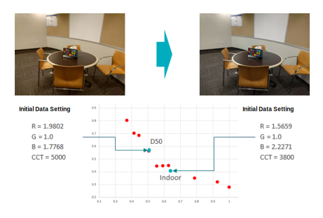
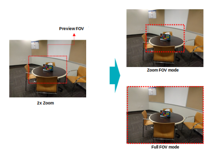

These examples illustrate the effects of adjusting specific AWB initial tuning
parameters.
Initial AWB gain and CCT
If the initial AWB gain and CCT are set for D50 illuminant, in an indoor condition
you see a yellowish image when you start the camera. To get a proper white balance,
measure the AWB gain and CCT with a gray chart in the indoor condition. However, the
new values would result in a bluish image if you start the camera in an outdoor
condition.
Note: AWB sets a high convergence speed when camera starts, based on
the temporal convergence module parameters for fast convergence.

BG stats mode
- If BG stats config mode = Full FOV mode, AWB sets the full window for BG
stats\u000B
- If BG stats config mode = Zoom FOV mode, AWB sets the same FOV for BG stats as
that used in the preview
- The following image provides an example:
